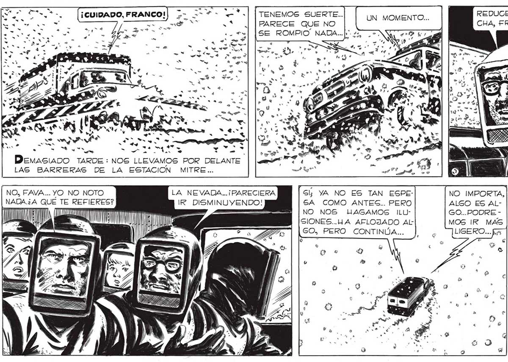
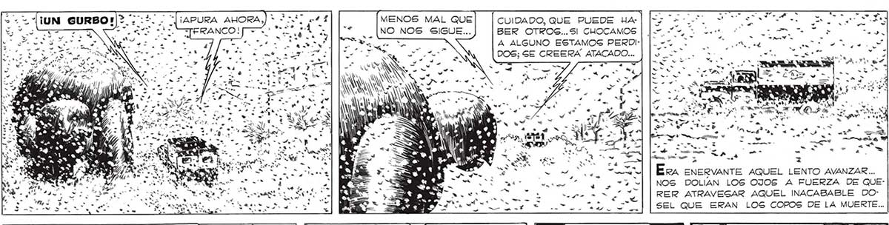
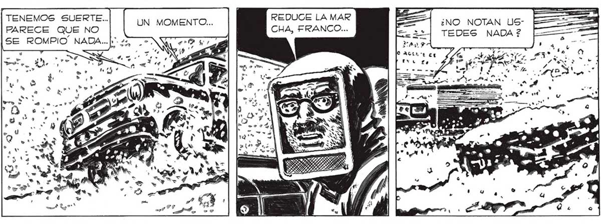

E 332 S. > . e . - = ¡UN GURBO»|> -: Lil ars ls Naa a? 4 e IA 5 - MU ¿un e Denasiano TARDE : NOS LLEVAMOS POR DELANTE LAS BARRERAS DE LA ESTACION MITRE... NO, FAVA... YO NO NOTO NADA.¿A QUE TE REFIERES? JS 4) | ¡LT MENOS MAL QUE TERANCO! NO NOS SIGUE... a + . « e - = E = E 7] sd e só Wi IN Ñ - _ INE qe CUIDADO, QUE PUEDE HABER OTROS... Sl CHOCAMOS A ALGUNO ESTAMOS PERDIDOS; SE CREERA ATACADO... -4 Era ENERVANTE AQUEL L z ENTO AVANZAR ... NOS DOLIAN LOS OJOS A FUERZA DE QUERER ATRAVESAR AQUEL INACABABLE DOSEL QUE ERAN LOS COPOS DE LA MUERTE... TENEMOS SUERTE... PARECE QUE NO SE ROMPIO. NADA...|» Gl; YA NO ES TAN ESPESA COMO ANTES.. PERO NO NOS uUAGAMOS ILUSIONES..HA AFLOJADO AL GO, PERO CONTINUA... REDUCE LA MAR ¿NO NOTAN USCHA, FRANCO... 2 TEDES NADA ?2 == HAD 7 O ACA "E Cá NO IMPORTA, ALGO ES ALGO...PODRE MOS IR MAS Favaiti TENÍA RAZON:FRAN: CO PUDO ACELERAR. PRONTO CORRIMOGS POR LA AVENIDA A MAS DE CINCUENTA KILOMETROS POR HORA. Fué así como PRONTO SUPERAMOS LA SUBI DA DE LA LUCILA, COMO PaASAMOS POR MARTINEZ, COMO DEJAMOS ATRAS LA PLA ZOLETA DE ACASUSGO...


